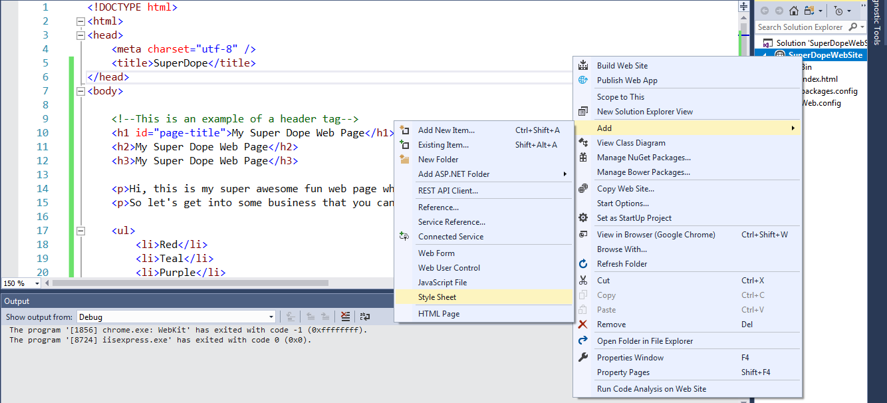
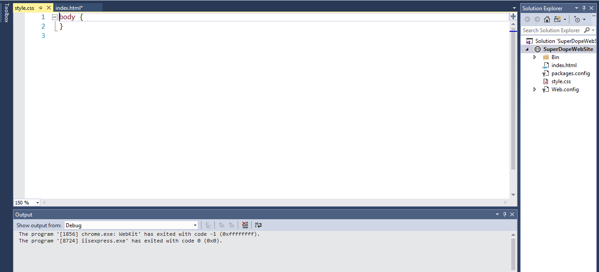

CSS Styling
Designing your content for striking results
© We Can Code IT, LLC
Cascading Style Sheets
-
The second front-end language we’re going to talk about is CSS (Cascading Style Sheets), the style layer of the front-end.
-
There are multiple ways to identify elements in your HTML and change the way they look.
-
There are two methods by which you can style your HTML page with CSS.
-
One method is to construct your CSS styling inside style tags within your HTML page.
-
The second method is to add a seperate styling sheet to your website, then reference that style sheet in your HTML page.
-
We will utilize both methods
External Styling Sheet
-
In your Solution Explorer, right click on SuperDopeWebSite.
-
Select Add then Style Sheet. Change the name to style then select OK

We should all be here
-
You should now have an index and a style pages.
 -
Now select the index tab.
Link the style sheet
-
Find the file named style in your solution explorer, and drag it to the head section of the index.html.
-
Ensure that the style sheet is the last item referenced in the head section.

Selectors
-
Before we can apply styles to elements in your HTML, there are 5 main selectors that we need to talk about.
-
The first and least specific are element selectors.
-
These are just selecting elements by their tag name.
-
Styles will be applied to all elements that have that tag.
-
Add the following styling to your style.css file after the closing body }
-
Select save all, select your index tab, then select Google Chrome from the standard toolbar.
p {
background-color: blue;
color: white;
}
-
Because we are styling by element, all paragraph elements will now have a blue background and white text.
-
Question time: Which style command changes the color of the font?
CSS commands
-
There are hundreds of CSS commands we can use to style our HTML.
-
Covering all of them would be time consuming and inefficient.
-
We have a great resource we can reference whenever we need to find the correct CSS command.
W3Schools Do not be afraid to experiment with as many CSS commands as you can.
Pseudo Selectors
-
Pseudo selectors are the next most specific in our list of selectors.
-
With pseudo selectors we have the ability to select elements by attributes that they have, for example:
input[type="text"] {
color: red;
}
-
This is going to give any of our input elements with a type of text a text color of red, but no other input items will be affected.
-
Other pseudo selectors include:
:focus:active[type="submit"]
Class Selectors
-
Next on our specificity tour are classes.
-
Classes can be applied to multiple HTML elements
-
Styling rules you apply to your classes will be applied to all elements that have that class.
If you want to change the font-family of everything in the .superhero class to sans-serif, it would look like:
.superhero {
font-family: Euphemia;
}
- Look at our elements in our superhero class and notice the change in font type.
ID Selectors
-
The final and most specific selector are IDs.
-
IDs are unique to whatever element they are applied to.
-
Elements with IDs are identified with the
#symbol. -
So if you want to style the element that has the
#page-titleID… -
Add the following code to your style.css file.
-
Select save all and refresh your browser.
#page-title {
color: var(--primary-color); /*We'll get to what this is shortly*/
font-family: Aharoni;
font-size: 2rem;
}
Chain Selectors
-
Chaining selectors is a way to add more specificity to your selection.
-
For example, if we wanted to keep the changes from our first slide:
p {
background-color: blue;
color: white;
}
-
But we also want any
<h1>tags inside of our section to have a red background. -
In this case we can chain the selectors to be more specific.
-
Add the following code to your style.css file.
- Select save all and refresh your browser.
section h1 { background-color: red; } - These can also get as complicated as you want them to be, e.g.:
header nav .nav-items li > a:focus {
border-bottom: 1px solid #123456;
}
Default Styles
-
So what happens when we don’t declare any CSS rules?
-
Well, each browser has default style rules.
-
It is important to keep these in mind when declaring your own styles because, if you aren’t careful, these styles can overwrite and collide with your styles.
-
A good first step is to know what the default styles look like.
-
You can check these out using the Chrome’s dev tools and disable any link stylesheets.
-
To access the dev tools inside of Chrome: right-click inside of your browser window and click inspect (
Ctrl+Shift+i). -
An even better step is to knock out all default styles in all browsers with Normalize.
-
This is a maintained stylesheet that resets all default styles from all browsers so you start with absolutely no styling happening.
Colors!
- There are a few different ways to declare colors inside of CSS. Hexadecimal, rgba(), hsla(), and keywords.
h1 {
background-color: #39ADD1; /*Hexadecimal*/
border: 3px solid hsla(270, 50%, 45%, 1); /*Hue, Saturation, Lightness, Alpha (opacity)*/
box-shadow: 3px 3px 3px aquamarine; /*Keyword*/
color: rgba(0, 255, 127, 0.9); /*Red, Green, Blue, Alpha (opacity)*/
}
Check here for a color checker.
Units
-
There are a lot of different things we need to have measurements for in CSS.
-
Some of them static, some dynamic, some relative to the size of the container they’re housed in, some relative to the size of the whole window.
px
-
Pixels are a single area of illumination on your screen.
-
They are useful but losing popularity as better relative units are becoming available.
rem
-
Rem units are based on the default font-size of the root (HTML in our case).
-
So if your root font-size is 16px, 1rem = 16px.
em
- Em units are based on the font-size of the containing element.
Units continued…
Percentage
-
Percentage based measurements are based on the size of their parent element, e.g.:
-
Add the following code to your style.css file.
-
Select save all and refresh your browser.
section {
width: 300px;
}
section h3 {
width: 50%; /*This equals 150px*/
}
Units continued…
Viewport Height (vh), Viewport Width (vw)
-
These measurements are based on the size of your viewport (browser window).
-
They’re similar to percentage that way, except they are always related to the viewport, e.g.:
-
Add the following code to your style.css file.
-
Select save all and refresh your browser.
ul li img {
height: 15vh; /*Always 15% the height of the viewport*/
}
Typography
Font stack
-
So a few words on your words:
-
You have what is known as a font stack for any given text based element.
-
What this means is that you can have a very specific typeface that you want to use but then also have back-ups just in case, for some reason, your typeface isn’t available to your user.
-
This way you can avoid having to rely on defaults EVER!
p {
font-family: Cambria, Utopia, "Nimbus Roman No9 L Regular", Times, serif;
}
Typography continued…
Sans-serif vs. Serif
-
Hey, isn’t this more design than programming, you ask? Yes! But deal with it.
-
There are some important things to note here as far as screens vs printed material.
-
One of the biggest parts to consider is the size of your text.
-
Serifs tend to be better for things like titles because they’re large.
-
The reason this is helpful is because serifs are usually rendered in print media at 1000 dpi and screen media tends to render anywhere from 100-300 dpi.
-
This means large bodies of text tend to do better with sans-serif typefaces. (But rules are always made to be broken 😈)
Monospace, Fantasy, and Cursive typefaces
-
DON’T USE THEM.
-
Not really never, but seriously, be very cautious using these typefaces.
-
They can make your page look disjointed but remember our font stack!
-
These fonts, by and large, are less likely to be available to your user than more common serif and sans-serif typefaces.
Backgrounds
- Most things have backgrounds that can be manipulated and there are three options to choose from: images, colors, and gradients.
Images
- Images have a much larger range of options to use for the size, position, and repeat of your background.
html {
background-image: url('../images/path-to-my-image.jpg');
background-repeat: repeat; /*other options: repeat-x or repeat-y*/
background-size: 300px 200px; /*other options: cover or length*/
background-position: 50% 50%;
}
Backgrounds continued…
Color
-
This one is much simpler than image by a long shot.
-
You just declare a background color and your element will have that color background.
-
So if you wanted to make all of your anchor (
<a>) tags have a yellow background, add the following code to your style.css file. -
Select save all and refresh your browser.
a {
background-color: yellow;
}
Backgrounds continued…
Gradient
-
Gradients are a good way to achieve some really interesting (read: subtle please!) backgrounds for your elements.
-
Hey look at the background on this slide! So there are two gradient types: linear and radial.
-
Note that you need to use
background-imagefor these. -
Add the following code to your style.css file.
-
Select save all and refresh your browser.
body { /*These can get MUCH more complex btw*/
background-image: linear-gradient(rgba(127, 127, 255, 0.75), #ff6);
}
section {
background-image: radial-gradient(circle at center, red, blue);
}
CSS Variables
-
CSS has built-in variables now which is of HUGE benefit to us.
-
They must be declared in the
:rootelement. -
This is just another way to reference the
htmlelement. -
This is a bit of a bonus so don’t be upset if this doesn’t make sense immediately.
-
Add the following code to your style.css file.
-
Select save all and restart your browser.
:root { /*Notice we declare this with the same key, value pair.*/
--primary-color: red;
--secondary-color: blue;
--tertiary-color: yellow;
}
h1 { /*Declare variables the same way you would other values.*/
background-color: var(--tertiary-color);
color: var(--primary-color);
}
Time for practice!
Homework
Time to put what you’ve learned here to work. Clone this exercise from github and follow the instructions to complete the challenge. Once you finish up, check out what MDN has to offer here. Use these examples to play around on Codepen. (also make yourself an account!) Let’s look at this example to see power of CSS!